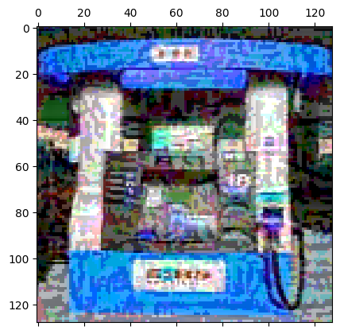
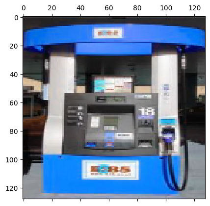
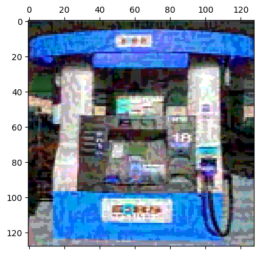
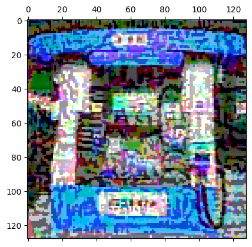
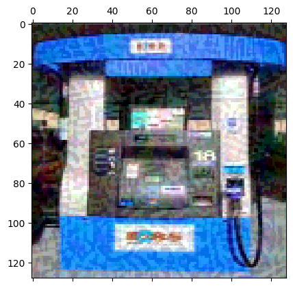
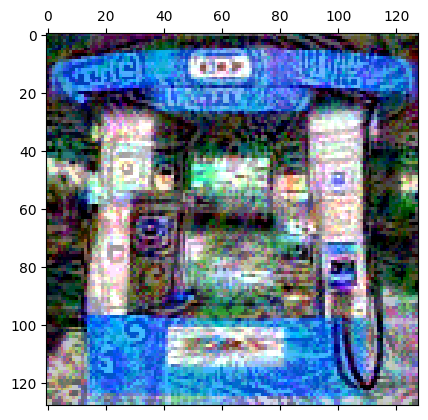
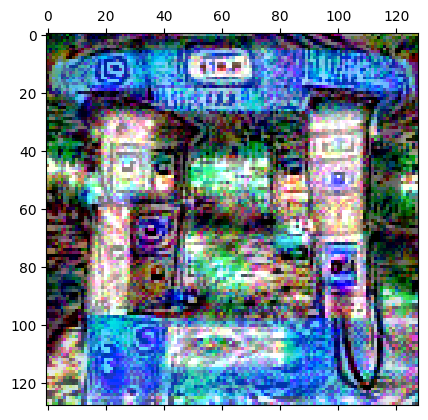
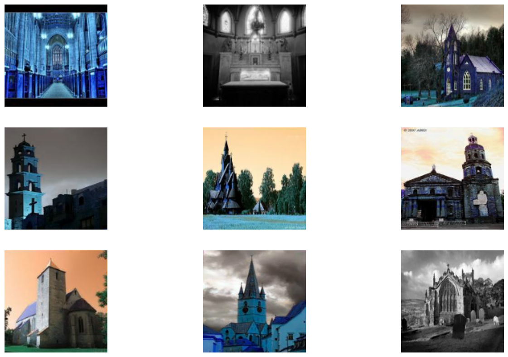

# Install the ART library (provides adversarial attacks)!pip install adversarial-robustness-toolbox
Collecting adversarial-robustness-toolbox
Downloading adversarial_robustness_toolbox-1.20.1-py3-none-any.whl.metadata (10 kB)
Requirement already satisfied: numpy>=1.18.0 in /usr/local/lib/python3.12/dist-packages (from adversarial-robustness-toolbox) (2.0.2)
Requirement already satisfied: scipy>=1.4.1 in /usr/local/lib/python3.12/dist-packages (from adversarial-robustness-toolbox) (1.16.3)
Requirement already satisfied: scikit-learn>=0.22.2 in /usr/local/lib/python3.12/dist-packages (from adversarial-robustness-toolbox) (1.6.1)
Requirement already satisfied: six in /usr/local/lib/python3.12/dist-packages (from adversarial-robustness-toolbox) (1.17.0)
Requirement already satisfied: setuptools in /usr/local/lib/python3.12/dist-packages (from adversarial-robustness-toolbox) (75.2.0)
Requirement already satisfied: tqdm in /usr/local/lib/python3.12/dist-packages (from adversarial-robustness-toolbox) (4.67.1)
Requirement already satisfied: joblib>=1.2.0 in /usr/local/lib/python3.12/dist-packages (from scikit-learn>=0.22.2->adversarial-robustness-toolbox) (1.5.3)
Requirement already satisfied: threadpoolctl>=3.1.0 in /usr/local/lib/python3.12/dist-packages (from scikit-learn>=0.22.2->adversarial-robustness-toolbox) (3.6.0)
Downloading adversarial_robustness_toolbox-1.20.1-py3-none-any.whl (1.1 MB)
━━━━━━━━━━━━━━━━━━━━━━━━━━━━━━━━━━━━━━━━0.0/1.1 MB? eta -:--:--━━━━━━━━━━━━━━━━━━━━━━━━━━━━━━━━━━━━━━━━1.1/1.1 MB55.9 MB/s eta 0:00:00
Installing collected packages: adversarial-robustness-toolbox
Successfully installed adversarial-robustness-toolbox-1.20.1
# Import librariesimport tensorflowimport numpy as npimport matplotlib.pyplot as pltimport osfrom os import listdirimport cv2import natsortfrom sklearn.model_selection import train_test_split# Print the version of tensorflow and kerasprint("TensorFlow version:{}".format(tensorflow.__version__))
TensorFlow version:2.19.0
# Download the dataset!wget https://www.idahofallshighered.org/vakanski/Codes_Data/imagenette2.zip
--2026-01-17 02:16:24-- https://www.idahofallshighered.org/vakanski/Codes_Data/imagenette2.zip
Resolving www.idahofallshighered.org (www.idahofallshighered.org)... 50.6.2.30
Connecting to www.idahofallshighered.org (www.idahofallshighered.org)|50.6.2.30|:443... connected.
HTTP request sent, awaiting response... 200 OK
Length: 106722829 (102M) [application/zip]
Saving to: ‘imagenette2.zip’
imagenette2.zip 100%[===================>] 101.78M 13.3MB/s in 9.4s
2026-01-17 02:16:35 (10.9 MB/s) - ‘imagenette2.zip’ saved [106722829/106722829]
# Uncompress the dataset!unzip -uq 'imagenette2.zip'-d 'sample_data/'
# Function to load the images and the labels from the datasetdef load_images_and_labels(directory): imgs_list = [] labels_list = []# List of all subfolders in the directory subfolders_list_1 = listdir(directory)# Make sure that the subfolders are sorted subfolders_list = natsort.natsorted(subfolders_list_1)# Assign a label to each folder with images (0 to the first folder) lab =0for subfolder_name in subfolders_list: sub_dir_path = directory +'/'+ subfolder_name# Read the images as numpy arrays imagesList = listdir(sub_dir_path)for i inrange(len(imagesList)): tmp_img = cv2.imread(os.path.join(sub_dir_path, imagesList[i]))# Resize all images to 128 x 128 pixels resized_img = cv2.resize(tmp_img, (128, 128)) img_arr = np.array(resized_img) imgs_list.append(img_arr/255.) labels_list.append(lab) lab +=1# Convert the lists to numpy arrays imgs = np.asarray(imgs_list) labels = np.asarray(labels_list)return imgs, labels# Use the above function to load the training and test datasetstrain_images, train_labels = load_images_and_labels('sample_data/imagenette2/train')test_and_val_images, test_and_val_labels = load_images_and_labels('sample_data/imagenette2/val')
# Split into test and validation setstest_images, val_images, test_labels, val_labels = train_test_split(test_and_val_images, test_and_val_labels, test_size=0.4, random_state=12)
# Display the shapes of train, validation, and test datasetsprint('Images train shape: {} - Labels train shape: {}'.format(train_images.shape, train_labels.shape))print('Images validation shape: {} - Labels validation shape: {}'.format(val_images.shape, val_labels.shape))print('Images test shape: {} - Labels test shape: {}'.format(test_images.shape, test_labels.shape))# Display the range of images (to make sure they are in the [0, 1] range)print('\nMax pixel value', np.max(train_images))print('Min pixel value', np.min(train_images))print('Average pixel value', np.mean(train_images))print('Data type', train_images[0].dtype)
Images train shape: (9469, 128, 128, 3) - Labels train shape: (9469,)
Images validation shape: (1570, 128, 128, 3) - Labels validation shape: (1570,)
Images test shape: (2355, 128, 128, 3) - Labels test shape: (2355,)
Max pixel value 1.0
Min pixel value 0.0
Average pixel value 0.44966878195890525
Data type float64
# A list with the names of the image classeslabel_names = ['tench', 'English springer', 'cassette player', 'chain saw', 'church', 'French horn', 'garbage truck', 'gas pump', 'golf ball', 'parachute']# Plot a few images to check if the labels make senseplt.figure(figsize=(16, 10))for n inrange(9): i = np.random.randint(0, len(train_images), 1) ax = plt.subplot(3, 3, n+1) plt.imshow(train_images[i[0]]) plt.title('Label:'+str(label_names[train_labels[i[0]]])) plt.axis('off')
base_model = vgg16.VGG16(weights='imagenet', include_top=False, input_shape=(128, 128, 3))# Add a global spatial average pooling layerx = base_model.outputx = GlobalAveragePooling2D()(x)# Add fully-connected layersx = Dense(2048, activation='relu')(x)x = Dropout(0.25)(x)x = Dense(512, activation='relu')(x)x = Dropout(0.25)(x)# Add a softmax layer with 10 classespredictions = Dense(10, activation='softmax')(x)# Create the modelmodel = Model(inputs=base_model.input, outputs=predictions)
Downloading data from https://storage.googleapis.com/tensorflow/keras-applications/vgg16/vgg16_weights_tf_dim_ordering_tf_kernels_notop.h5
58889256/58889256━━━━━━━━━━━━━━━━━━━━4s 0us/step
# Import the TensorFlow Classifier from the ART library# Import the FastGradientMethod and ProjectedGradientDescent attacks from the ART libraryfrom art.estimators.classification import TensorFlowV2Classifierfrom art.attacks.evasion import FastGradientMethod, ProjectedGradientDescent
# Create a TensorFlow Classifier object for the model# State number of classes, input shape, input values (clipped to the range [0, 1]), and loss objectclassifier = TensorFlowV2Classifier(model=model, nb_classes=10, input_shape=(128, 128, 3), clip_values=(0, 1), loss_object=tensorflow.keras.losses.SparseCategoricalCrossentropy())
# Use the first 200 test images for creating adversarial samplesadv_imgs = test_images[0:200]adv_labels = test_labels[0:200]
# FGSM attack for the first image with espilon=30./255attack_fgsm = FastGradientMethod(estimator=classifier, eps=30./255)fgsm_attack_adv_imgs = attack_fgsm.generate(adv_imgs[0:10])plt.matshow(np.squeeze(fgsm_attack_adv_imgs[0]))plt.show()

# FGSM attack with espilon=10./155attack_fgsm = FastGradientMethod(estimator=classifier, eps=10./255)fgsm_attack_adv_imgs = attack_fgsm.generate(adv_imgs)loss_test, accuracy_test = model.evaluate(fgsm_attack_adv_imgs, adv_labels)perturbation = np.mean(np.abs((fgsm_attack_adv_imgs - adv_imgs)))print('Accuracy on adversarial test data: {:4.2f}%'.format(accuracy_test *100))print('Average perturbation: {:4.2f}'.format(perturbation))plt.matshow(np.squeeze(fgsm_attack_adv_imgs[0]))plt.show()
7/7━━━━━━━━━━━━━━━━━━━━3s 482ms/step - accuracy: 0.2916 - loss: 5.8729
Accuracy on adversarial test data: 28.00%
Average perturbation: 0.04
# FGSM attack for various epsilon valuesepsilon = [0./255, 1./255, 3./255, 5./255, 8./255, 20./255, 50./255, 80./255]fgsm_attack_acc = []for eps in epsilon: attack_fgsm = FastGradientMethod(estimator=classifier, eps=eps) fgsm_attack_adv_imgs = attack_fgsm.generate(adv_imgs) loss_test, accuracy_test = model.evaluate(fgsm_attack_adv_imgs, adv_labels) fgsm_attack_acc.append(accuracy_test) perturbation = np.mean(np.abs((fgsm_attack_adv_imgs - adv_imgs)))print('Accuracy on adversarial test data: {:4.2f}%'.format(accuracy_test *100))print('Average perturbation: {:4.2f}'.format(perturbation)) plt.matshow(np.squeeze(fgsm_attack_adv_imgs[0])) plt.show()
7/7━━━━━━━━━━━━━━━━━━━━0s 56ms/step - accuracy: 0.8881 - loss: 0.4178
Accuracy on adversarial test data: 92.50%
Average perturbation: 0.00
7/7━━━━━━━━━━━━━━━━━━━━0s 57ms/step - accuracy: 0.8249 - loss: 0.6046
Accuracy on adversarial test data: 83.00%
Average perturbation: 0.00

7/7━━━━━━━━━━━━━━━━━━━━0s 56ms/step - accuracy: 0.5065 - loss: 2.6010
Accuracy on adversarial test data: 52.00%
Average perturbation: 0.01
7/7━━━━━━━━━━━━━━━━━━━━0s 57ms/step - accuracy: 0.3899 - loss: 4.2705
Accuracy on adversarial test data: 39.50%
Average perturbation: 0.02
7/7━━━━━━━━━━━━━━━━━━━━0s 57ms/step - accuracy: 0.3061 - loss: 5.5434
Accuracy on adversarial test data: 30.50%
Average perturbation: 0.03
7/7━━━━━━━━━━━━━━━━━━━━0s 57ms/step - accuracy: 0.2483 - loss: 5.6062
Accuracy on adversarial test data: 23.00%
Average perturbation: 0.07

7/7━━━━━━━━━━━━━━━━━━━━0s 56ms/step - accuracy: 0.1965 - loss: 3.2752
Accuracy on adversarial test data: 20.00%
Average perturbation: 0.17

7/7━━━━━━━━━━━━━━━━━━━━0s 57ms/step - accuracy: 0.1640 - loss: 3.0974
Accuracy on adversarial test data: 16.00%
Average perturbation: 0.26
7/7━━━━━━━━━━━━━━━━━━━━0s 56ms/step - accuracy: 0.8881 - loss: 0.4178
Accuracy on adversarial test data: 92.50%
Average perturbation: 0.00
7/7━━━━━━━━━━━━━━━━━━━━0s 57ms/step - accuracy: 0.7958 - loss: 0.7917
Accuracy on adversarial test data: 80.50%
Average perturbation: 0.00
7/7━━━━━━━━━━━━━━━━━━━━0s 56ms/step - accuracy: 0.4472 - loss: 3.5222
Accuracy on adversarial test data: 45.50%
Average perturbation: 0.01
7/7━━━━━━━━━━━━━━━━━━━━0s 57ms/step - accuracy: 0.3073 - loss: 5.3153
Accuracy on adversarial test data: 29.50%
Average perturbation: 0.02
7/7━━━━━━━━━━━━━━━━━━━━0s 57ms/step - accuracy: 0.2793 - loss: 5.8348
Accuracy on adversarial test data: 27.00%
Average perturbation: 0.03
7/7━━━━━━━━━━━━━━━━━━━━0s 56ms/step - accuracy: 0.1020 - loss: 19.3470
Accuracy on adversarial test data: 6.50%
Average perturbation: 0.06

7/7━━━━━━━━━━━━━━━━━━━━0s 57ms/step - accuracy: 0.0734 - loss: 65.0707
Accuracy on adversarial test data: 5.00%
Average perturbation: 0.12

7/7━━━━━━━━━━━━━━━━━━━━0s 57ms/step - accuracy: 0.0734 - loss: 94.3012
Accuracy on adversarial test data: 5.00%
Average perturbation: 0.18

Targeted Adversarial Attack
Misclassify Church images as Gas Pump images
# Collect all "Church" images from the datasetchurch_images_list = []for i, label inenumerate(test_labels):if label==4: church_images_list.append(test_images[i])church_images = np.asarray(church_images_list)print(church_images.shape)
(249, 128, 128, 3)
# Plot a few images to check if the labels are accurateplt.figure(figsize=(16, 10))for n inrange(9): i = np.random.randint(0, len(church_images), 1) ax = plt.subplot(3, 3, n+1) plt.imshow(church_images[i[0]]) plt.axis('off')

# Target labels are "Gas pump" (class label is 7)labels_target =7*np.ones((len(church_images),1))
labels_target.shape
(249, 1)
# Church labelslabels_church =4*np.ones((len(church_images),1))
# Evaluate the accuracy of the model on the set of church imagesloss_test, accuracy_test = model.evaluate(np.array(church_images), labels_church)print('Accuracy on clean test data: {:4.2f}%'.format(accuracy_test *100))
8/8━━━━━━━━━━━━━━━━━━━━6s 784ms/step - accuracy: 0.9302 - loss: 0.3688
Accuracy on clean test data: 94.78%